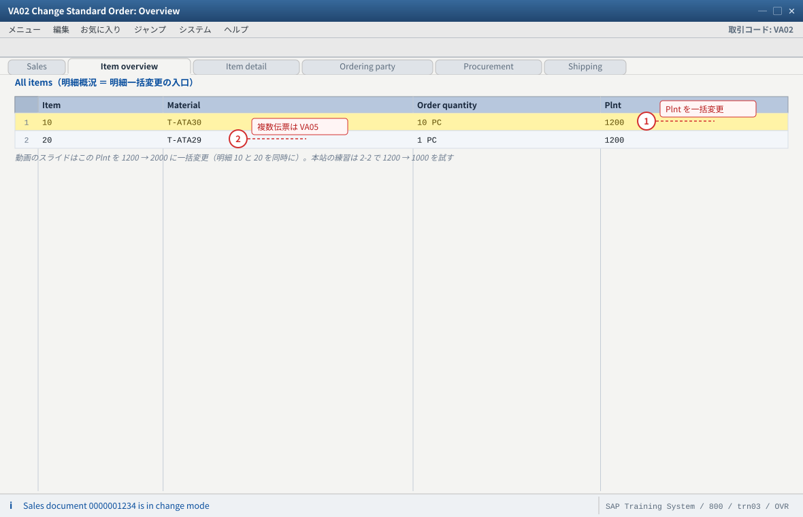
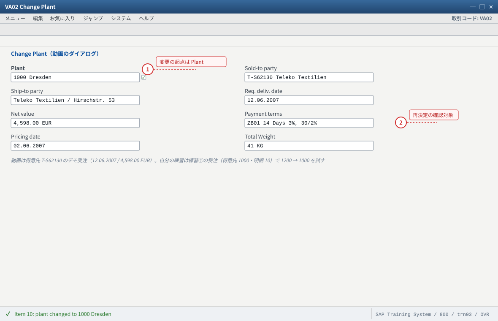
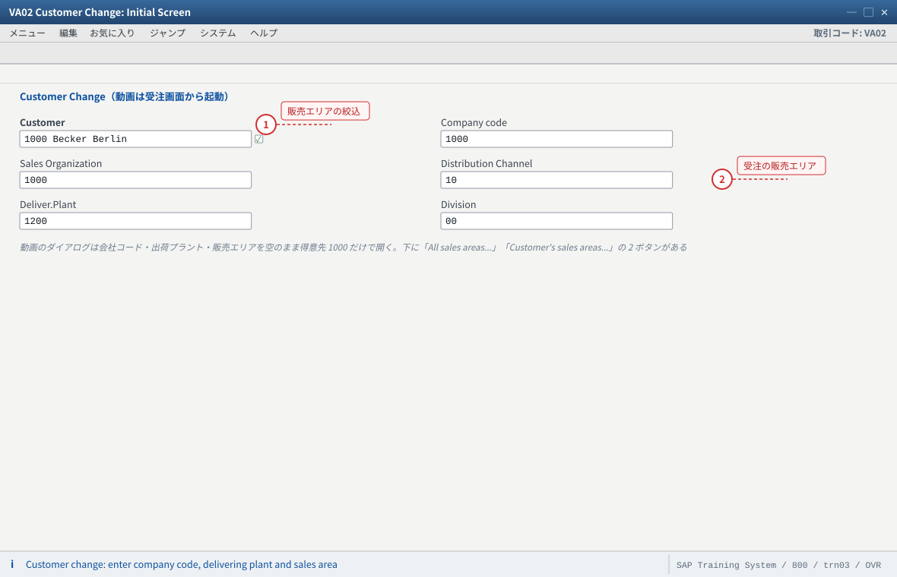
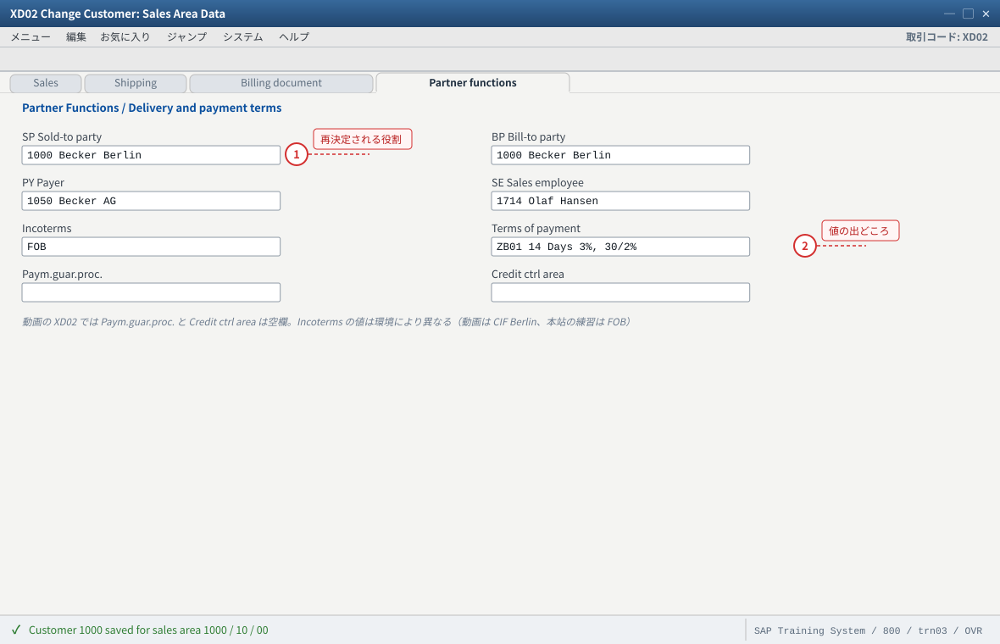
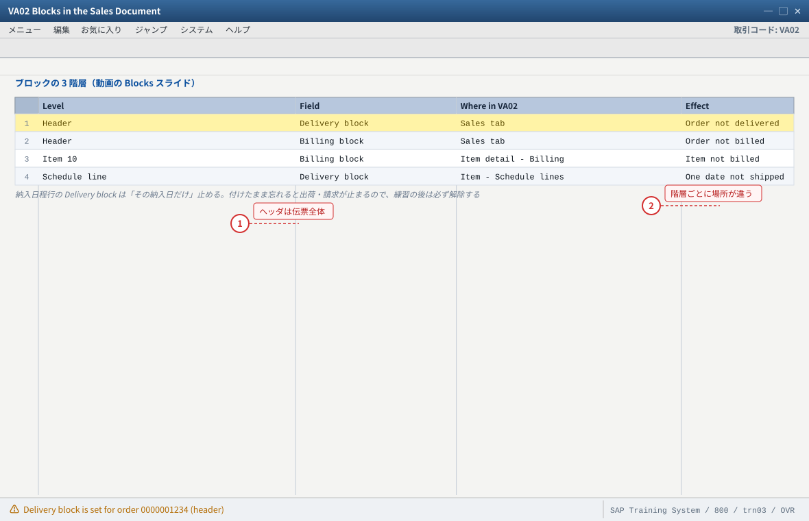
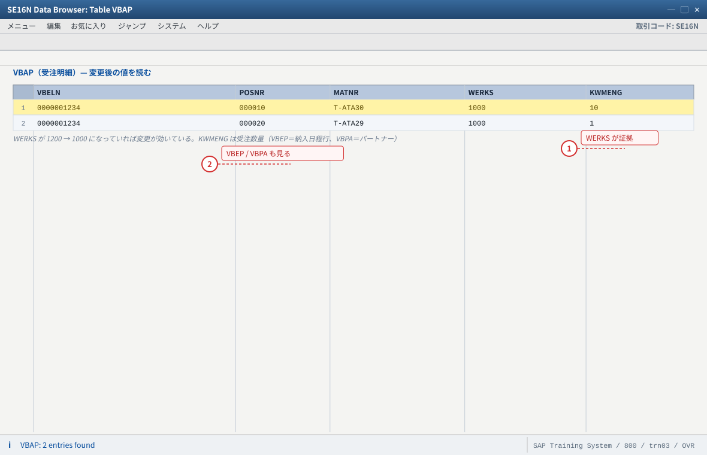

.png 放进 assets/gui/ 后执行 python3 tools/swap_gui_images.py <site> --apply 一键替换。练习② 伝票の変更と再決定（VA02）
32:52〜51:22）の主题です。① 変更の 3 方式（明細一括・複数伝票・一覧から）、② プラント変更、③ 得意先変更と再決定（Redetermined／Unchanged）、④ ブロックの 3 階層を、実際の受注で確かめます。「得意先を変えたのに価格が古いまま」を自分で再現して説明できるのがゴールです。2-1 変更の 3 方式を押さえる（動画の Overview: Changing of sales documents）
動画のスライドは「明細の一括変更」「複数伝票の一括変更」「文書一覧からの変更」の 3 つを示します。 まず自分の受注でどの方式が使えるかを確認します。
| 方式 | 動画の例 | 本站での練習 |
|---|---|---|
| 明細の一括変更 | Item 10 / 20 の Plant を 1200 → 2000 に同時変更 | VA02 → 明細概況で複数明細を選択 → 一括変更（または VA02 のメニュー「編集 → 一括変更」） |
| 複数伝票の一括変更 | 複数受注の Plant 列をまとめて変更 | VA05（受注一覧）で対象を絞り、一括変更機能を使う（環境により MASS を使用） |
| 文書一覧からの変更 | 受注リスト → 変更 | VA05 で受注を検索 → 行を選択して変更、または V.02 で不完全な受注を拾って直す |
VA02で练习①の受注番号を開く。ヘッダと明細の構造（Sales / Item overview / Item detail タブ）を確認する。- 明細 10 と 20（両方ある場合）を選択し、メニューから一括変更を開く。どの項目が一括変更できるかを一覧する（プラント・納入日・数量など）。
VA05を起動し、得意先1000で自分の受注を検索する（＝文書一覧からの変更の入口）。V.02を実行し、不完全な受注の一覧に自分の受注が出るか確認する（PO 番号などを空にして保存した場合）。
②
VA05 で自分の受注が検索できる（＝一覧経由の変更が可能）。③
V.02 の使い方（不完全な受注を拾って直す）を説明できる。②
VA05 の検索条件が広すぎると大量ヒットします。得意先・期間・伝票タイプで絞ってください。
- 1 明細概況（All items）で Plnt を上書きすれば、明細 10 と 20 を同時に変更できる。動画のスライドが示す「1 伝票内の一括変更（Concurrent change to several items）」がこれ
- 2 複数の伝票をまたぐなら VA05（受注一覧、環境により MASS）、文書一覧からなら VA05 と V.02（不完全な受注）。1 伝票内の一括変更とは入口が違う
自システムでの確認：VA02 → 明細概況で Plnt を直接上書きできるか、メニュー「編集 → 一括変更」にどんな項目（プラント・納入日・数量など）が出るかを確認。② 複数伝票は VA05、③ 文書一覧は VA05 と V.02 で。
2-2 プラント変更（Change Plant）—— 動画 38:00 付近
入力値
対象：练习①で作った受注の明細（品目 T-ATA30）
変更前：出荷プラント 1200（品目マスタ 販売組織1 の値）
変更後：プラント 1000（動画のダイアログでは 1000 Dresden が選ばれています）
確認したい連鎖：
出荷プラント 1200 → 1000 に変えると
→ 出荷ポイント（Shipping point）が再決定される
→ 出荷タイプ（Delivery type）の決定に影響する
→ 在庫確認（ATP）の参照先プラントが変わる
VA02で受注を開き、明細の出荷プラント欄をダブルクリック（または F4）してプラント変更ダイアログを出す（動画の「Change Plant」画面と同じ）。- プラントを
1000に変更する。 - 変更後、出荷ポイント／出荷タブの値が変わったかを確認する（動画はこの連鎖を見せています）。
- 保存する前に、変更前後の値をメモする。
- 保存し、
VA03→ 明細 → 出荷タブおよびSE16NでVBAP-WERKSの変化を確認する。
②
VBAP-WERKS が新しいプラントになっている。③ 与力価格が変わった場合、その理由（プラント依存の条件があるか）を説明できる。
② 在庫が無いプラントに変えると、ATP の結果が不足になります（C13）。
③ 出荷プラントは3 つの主データから自動提案される値です。手で変えた後に品目を入れ直すと、元の値に戻ることがあります（提案の優先順位を思い出すこと）。
1200 → 1000 に変えたとき、「自動で変わった項目」と「変わらなかった項目」をそれぞれ 2 つ以上挙げ、理由を書いてください。
- 1 Plant を 1200 → 1000 に変えると、出荷ポイント・出荷タイプの決定・ATP の参照プラントが連鎖で再決定される。動画はこの連鎖をそのまま見せている
- 2 Plant 以外の欄は受注ヘッダ（Sold-to / Ship-to / 納入希望日 / 正味価額 / 支払条件）。プラントを変えた後にここが動くかどうかが 2-3 の再決定の観察対象になる
自システムでの確認：明細の出荷プラント欄をダブルクリック／F4 で「Change Plant」ダイアログが出るか、変更後に出荷タブの出荷ポイントが追随したかを VA02 → VA03 で確認。VBAP-WERKS は SE16N（練習 2-5）で。
2-3 得意先変更と再決定（Changes to the Sold-to Party）—— 動画 48:01〜
本站で最も重要な観察です。動画のスライドは、得意先を変えたときに 何が再決定され、何がそのまま残るかを 2 列で示しています。
再決定される（Redetermined）
- 得意先マスタ（住所など）
- 客先品目情報レコード
- テキスト
- 無償品（Free goods）
- 与力価格（Prices）
- 出力（Output）
- 出荷プラントと出荷ポイント
変わらない（Unchanged）
- 販売エリア
- 販売事務所と販売グループ
- 可用性と製品割当（Availability / Product allocation）
- バッチ（Batches）
練習の進め方（動画の流れに沿う）：
1) VA02 で受注を開く
2) メニューから「得意先変更（Customer Change）」を選ぶ
動画のダイアログ「Customer Change: Initial Screen」：
得意先 / 会社コード / 出荷プラント / 販売エリア（All sales areas / Customer's sales areas…）
3) 得意先を別のものに変更する（例：1000 → T-S62130 など、自システムにある得意先）
4) 変更後に「何が変わったか」を、下の 7 項目（再決定側）と 4 項目（不変側）で確認する
5) 動画では、この流れから XD02（得意先マスタ）へ飛び、
販売エリアデータの「パートナー機能」と「Delivery and payment terms」を確認している
注意：後続伝票（出荷・請求）があると「No changes（何も変更されない）」になります。
练习②では必ず『後続伝票の無い受注』で試してください。
- 後続伝票の無い受注（练习①で作ったもの）を
VA02で開く。 - メニューから得意先変更を選び、動画と同じ初期画面（Customer Change: Initial Screen）を出す。
- 変更前の状態を記録する（与力価格・与力日付・出荷プラント・支払条件・納入日程行・住所）。
- 得意先を変更して Enter。プロンプトが出たら従う（再決定の実行）。
- 動画ではこのあと 「Information: New pricing carried out.」に相当するメッセージが出て、与力価格が自動で組み直され、インコタームズも新しい得意先の値（動画は
CIF Berlin）に変わります。このメッセージが出たかどうかを必ず記録してください（＝与力の再決定が走った証拠）。 - 変更後の状態を記録し、7 項目（再決定側）と 4 項目（不変側）のどちらが動いたかを分類する。
- 動画と同じく
XD02で得意先マスタの販売エリアデータを開き、パートナー機能（SP／BP）と支払条件・インコタームズを確認する。 - 保存するか、練習として戻るか選ぶ（保存する場合は、後続の练习に影響しないことを確認してから）。
② 販売エリアと販売事務所・販売グループは変わらなかった（＝動画スライドの Unchanged と一致）。
③ 後続伝票のある受注で得意先を変えると何も変更されないことを、実際に試して確認した（またはその理由を説明できる）。
④
XD02 の得意先マスタと受注の値を対応づけられた。② 変わらないものを期待してしまう（販売エリアを変えたい）→ 販売エリアを変えるには別の手段が必要（受注での販売エリア変更）。動画の Unchanged 列が答えです。
③ 後続伝票ありで「何も起きない」 → 動画スライドの注記どおりの仕様（不具合ではない）。

- 1 どの販売エリアの得意先マスタを見て変えるかをここで決める。「Customer's sales areas...」はその得意先が持つ販売エリアだけに絞り、「All sales areas...」は全販売エリアを出す
- 2 販売エリアの 3 項目は受注から初期値で入る。ただし動画では空のままで、得意先マスタ側（XD02）へ飛んでいる点に注意
自システムでの確認：VA02 で受注を開き、得意先変更のメニュー位置（環境により「Sales document → Customer change」等）と、このダイアログの 2 ボタン（All sales areas...／Customer's sales areas...）の違いを実際に開いて確認。

- 1 SP＝受注先、BP＝請求先。得意先を替えると、この役割に誰を入れるかが得意先マスタから再決定される（＝動画スライドの Redetermined 列）
- 2 Incoterms と Terms of payment は受注の値の出どころ。ここを直すと次の受注から変わるが、既存受注は得意先変更をしないと追随しない
自システムでの確認：XD02 → 得意先 1000 → 販売エリアデータで、自分の販売エリア（1000 / 10 / 00）のパートナー機能・支払条件・インコタームズを開き、受注（VA03）の値と突き合わせる。
2-4 ブロックの 3 階層を設定・解除する（動画の Blocks スライド）
設定箇所（動画のスライドと同じ 3 階層）
| 階層 | 設定するブロック | 画面の場所 | 効果 |
|---|---|---|---|
| ヘッダ | 納入ブロック（Delivery block）／請求ブロック（Billing block） | VA02 ヘッダ → Sales タブ | 伝票全体が出荷／請求されなくなる |
| 明細 | 請求ブロック | VA02 明細詳細 → 請求タブ | その明細だけ請求対象から外れる |
| 納入日程行 | 納入ブロック | VA02 明細 → 納入日程行 | その納入日だけ出荷されない（部分的な保留） |
VA02で受注を開き、納入ブロックを 1 つ選ぶ（F4 で一覧が出ます）。動画のスライドにある Header → Delivery block の実践です。- 明細を開き、請求ブロックを設定する（Item → Billing block）。
- 納入日程行に納入ブロックを設定する（Schedule line → Delivery block）。
VA03で受注を開き、3 階層のブロックがどこに見えるかを確認する。- 解除して元の状態に戻し、解除後にブロックが消えることを確認する。
- （発展）動画スライドの “Defining blocks in Customizing” を確かめる：
VOV8で伝票タイプに納入ブロックを既定値として入れると、そのタイプで作る受注に最初からブロックが付きます（練習⑤の発展①）。
② 「なぜこの受注は出荷できないのか」を 3 階層を上から見て答えられる（①手で付けた ②Customizing 由来 ③チェック由来）。
③ 一覧でブロック付きを拾える（
V.23 請求ブロック・VA14L 納入ブロック。環境により異なるので T-code は F4／メニューで確認）。② 与信ブロックのようにシステムが付けるブロックは、手で消せません（与信解除の処理が必要）。ブロックの由来を先に確認するのが鉄則。

- 1 ヘッダの Delivery block / Billing block は伝票全体を止める。止まった受注を見たら、まずヘッダ → 明細 → 納入日程行の順に上から確認するのが切り分けの定石
- 2 同じブロックでも階層ごとに設定場所が違う。明細は請求タブ、納入日程行は明細の納入日程行から設定する（手で付けたか Customizing 由来かも見分ける）
自システムでの確認：VA02 のヘッダ Sales タブ（Delivery block / Billing block）、明細の請求タブ（Billing block）、明細の納入日程行（Delivery block）を実際に開いて F4 の理由一覧を見る。Customizing は動画スライドの “Defining blocks in Customizing”（伝票タイプに既定ブロックを持たせる）。
2-5 証拠を取る（変更前後の比較とテーブル）
- 変更前後で
VA03のヘッダ・明細・納入日程行・条件をスクリーンショットまたはメモで記録する。 SE16NでVBAP（明細：WERKS・PSTYV・KWMENG）とVBEP（納入日程行）を確認する。VBPAでパートナーが変更後にどうなったか（失敗した得意先の役割がどう扱われたか）を確認する。- 変更履歴を見る：
VA03の環境メニューから変更履歴（受注のヘッダ／明細の変更履歴）を開き、いつ何が変わったかを確認する。 - （任意）
SE16NでCDHDR／CDPOSを伝票番号で絞り、テーブルレベルの変更履歴を確認する（環境により記録の有無が異なります）。
②
VBAP／VBEP／VBPA の変化を画面で指せる。③ 変更履歴（または
CDHDR／CDPOS）で変更の事実を示せる。
- 1 VBAP-WERKS がプラント変更の物的証拠。VA03 の出荷タブ（出荷ポイント）と突き合わせて、値が 1 本の線で説明できるようにする
- 2 納入日程行は VBEP、パートナーは VBPA。同じ伝票番号で照会すると「どこまで連鎖したか」を表で示せる（変更の事実は VA03 の変更履歴でも）
自システムでの確認：SE16N にテーブル VBAP を入れて伝票番号で絞る（自分の受注番号に読み替え。ここでは例として 0000001234）。VBEP・VBPA も同じ伝票番号で。変更履歴は VA03 の環境メニュー、または CDHDR / CDPOS で確認。
2-6 验收（完成基准）
- 変更の 3 方式（明細一括・複数伝票・文書一覧）を言い分けられる
VA02で複数明細の一括変更ができる（プラント・納入日など）- Change Plant でプラントを変更し、出荷ポイント／出荷タブも追随することを確認した
- 得意先変更を実行し、再決定される 7 項目／変わらない 4 項目を実測で示せた
XD02で得意先マスタの販売エリアデータ（パートナー機能・支払条件）を確認した- ブロックの 3 階層（ヘッダ・明細・納入日程行）を設定し、解除した
- 「なぜこの受注は出荷できないか」を3 通り（手動／Customizing／チェック）で切り分けられる
- 後続伝票がある受注で得意先を変えても何も変わらないことを確認（または理由を説明）した
SE16NでVBAP／VBEP／VBPAの変更を確認した- 変更履歴（
VA03の機能、またはCDHDR／CDPOS）で変更の事実を示せた - つまずいた点を「症状 → 根因 → 証拠 → 処置 → 再発防止」で 1 件以上記録した
VC/2 Sales Summary）（動画が最も長く扱う照会機能と、その Customizing を再現します）